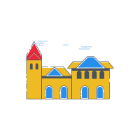

<html>
<head>
    <meta charset="utf-8">
    <meta http-equiv="X-UA-Compatible" content="IE=edge">
    <title>Event Display 路书</title>
    <meta name="viewport" content="width=device-width, initial-scale=1.0,maximum-scale=1.3, user-scalable=no">
    <meta name="description" content="百度地图 API 制作路书">
    <meta name="keywords" content="百度 API">
    <meta name="author" content="wg">
    <style>
        html,body,#map{
            height: 100%;
            width: 100%;
            margin: 0;
        }
    </style>
    <script src="http://api.map.baidu.com/api?v=1.4"></script>
    <script type="text/javascript" src="http://api.map.baidu.com/getscript?v=2.0&ak=bB8H5rgknsMqiKIDV0ALeuocIbXd6Uro&amp;services=&amp;t=20171004185957"></script>
    <script src="http://api.map.baidu.com/library/LuShu/1.2/src/LuShu_min.js"></script>
    <script type="text/javascript " src="./javascript/plugin/jquery.min.js"></script>

</head>
<body>
<div id="map"></div>
<script>
    var actXs = [];
    var actYs = [];
    var actInfos = [];
    var centerX,centerY,defaultContent;
    var personId = prompt("请输入出行者ID：","personID");
    $.ajax({
        type: "POST",
        url: "/static/display/eventQuery",
        dataType: "json",
        contentType: "application/json",

        data:JSON.stringify({saveName:getQueryString("name"),otherInfo:personId}),
        // data:JSON.stringify({saveName:getQueryString("saveName")}),
        async: false,
        success: function (result) {
            var personAct = result.data;
            console.log(personAct);
            actXs = personAct.actXs;
            actYs = personAct.actYs;
            actInfos = personAct.activityInfo;
            centerX = personAct.centerX;
            centerY = personAct.centerY;
            defaultContent = personAct.defaultContent;
        }
    });

    var map = new BMap.Map("map");
    map.enableScrollWheelZoom(true);     //开启鼠标滚轮缩放


    map.centerAndZoom(new BMap.Point(centerX, centerY), 12 );//设置中心点和级别（级别是1-20）数字越大越是放大
    console.log(actInfos[2]);
    var points = [];    var markers = []; var landmarkPois = [];var data_info = [];
    for(var i=0;i<actXs.length;i++) {
        points.push( new BMap.Point(actXs[i], actYs[i]));
        markers.push(points[i]);
        if(i!=actXs.length-1&& i!=0){
            var htmlStr = '</br>'+actInfos[i];
            landmarkPois.push({lng:actXs[i],lat:actYs[i],html:htmlStr,pauseTime:3});
        }
        data_info.push([actXs[i], actYs[i],actInfos[i]]);

    }
    console.log(JSON.stringify(landmarkPois)+" where is my fucking land marks");

    var opts = {
        width : 250,     // 信息窗口宽度
        height: 80,     // 信息窗口高度
        title : "" , // 信息窗口标题
        enableMessage:true//设置允许信息窗发送短息
    };

    var icon1 = new BMap.Icon('./icon/home.png', new BMap.Size(40,40),{anchor: new BMap.Size(32, 32)});//声明站点标注

    for(var i=0;i<data_info.length;i++){
        var marker = new BMap.Marker(new BMap.Point(data_info[i][0],data_info[i][1]),{icon:icon1});  // 创建标注
        var content = data_info[i][2];
        map.addOverlay(marker);               // 将标注添加到地图中
        addClickHandler(content,marker);
    }

    function addClickHandler(content,marker){
        marker.addEventListener("click",function(e){
            openInfo(content,e)}
        );
    }
    function openInfo(content,e){
        var p = e.target;
        var point = new BMap.Point(p.getPosition().lng, p.getPosition().lat);
        var infoWindow = new BMap.InfoWindow(content,opts);  // 创建信息窗口对象
        map.openInfoWindow(infoWindow,point); //开启信息窗口
    }
    function toNearNetworkPoint(x,y,pointArray){
        var dis =  Number.MAX_VALUE;
        var tempX = 0;
        var tempY = 0;
        for(var i=0;i<pointArray.length;i++){
            var tempDis = Math.sqrt((x-pointArray[i].lng)*(x-pointArray[i].lng)+
                (y-pointArray[i].lat)*(y-pointArray[i].lat));
            if(dis>tempDis){
                tempX = pointArray[i].lng; tempY = pointArray[i].lat;
                dis = tempDis;
            }
        }
        return {lng:tempX,lat:tempY};
    }
    //用站点画出路线，参数：站点、线路颜色、线路宽度、透明度

    var lushu;
    var personIcon = new BMap.Icon('./icon/person.png', new BMap.Size(40, 40), {anchor: new BMap.Size(30, 30)});
    // trainIcon.setImageSize(30,30);
    new BMap.Geocoder().getLocation(new BMap.Point(actXs[0], actYs[0]), function(rs) {
        // 百度地图解析城市名
        var addComp = rs.addressComponents;
        cityName = addComp.city;
        var drv = new BMap.DrivingRoute(cityName, {
            onSearchComplete: function (res) {
                if (drv.getStatus() == BMAP_STATUS_SUCCESS) {
                    var plan = res.getPlan(0);
                    var arrPois = [];
                    for (var j = 0; j < plan.getNumRoutes(); j++) {
                        var route = plan.getRoute(j);
                        arrPois = arrPois.concat(route.getPath());
                    }
                    map.addOverlay(new BMap.Polyline(arrPois, {strokeColor: '#111'}));
                    map.setViewport(arrPois);
                    for (var i = 0; i < landmarkPois.length; i++) {
                        var tempXY = toNearNetworkPoint(landmarkPois[i].lng, landmarkPois[i].lat, arrPois);
                        landmarkPois[i].lng = tempXY.lng;
                        landmarkPois[i].lat = tempXY.lat;
                    }

                    lushu = new BMapLib.LuShu(map, arrPois, {
                        //landmarkPois:此参数是路书移动的时候碰到这个点会触发pauseTime停留中设置的时间，单位为秒，经纬度误差超过十米不会停止
                        landmarkPois: landmarkPois,
                        defaultContent: defaultContent,
                        speed: 5000,//速度，单位米每秒
                        /* 1、需要把图片和代码放在同一个文件夹下面
                     * 2、size()是设置图片大小，图片过大可以截取
                     * 3、anchor是设置偏移，默认是图片最中间，设置偏移目的是让图片底部中间与坐标重合
                     */
                        icon: personIcon,//声明person标注
                        autoView: false,
                        enableRotation: false
                    });
                    lushu.start();

                }
            }
        });
        var wayPoints = [];
        if(points.length>3){
            wayPoints = points.slice(1,points.length-1);
        }else if(points.length==3){
            wayPoints = [points[1]];
        }else{
            wayPoints = [points[0]];
        }
        drv.search(points[0], points[points.length-1],{waypoints:wayPoints});//waypoints表示途经点

    });

    // var icon1 = new BMap.Icon('./icon/home.png', new BMap.Size(40,40),{anchor: new BMap.Size(32, 32)});//声明站点标注
    // for (i=0;i<markers.length;i++){
    //     map.addOverlay(new BMap.Marker(markers[i],{icon:icon1}));//添加站点marker
    // }
    //添加路书点击事件，并改变其运动速度
    // map.addEventListener('click',startlushu);
    // function startlushu(e){
    //     if (!!e.overlay) {
    //         var markerId = lushu._marker.ba;
    //         if (e.overlay.ba == markerId) {
    //             alert('你点击了高铁，速度即将变快');
    //             lushu._opts.speed = lushu._opts.speed+2000;
    //         }
    //     }
    // }
    function getQueryString(name) {
        var reg = new RegExp("(^|&)" + name + "=([^&]*)(&|$)", "i");
        var r = window.location.search.substr(1).match(reg);
        if (r != null) return unescape(r[2]);
        return null;
    }
    // function getFormInfo(){
    //     // var obj = $('#eventQuery').serialize();
    //     // var selectType = document.getElementsByName("selectType")[0].value;
    //     var textId = document.getElementById("selectId").value;
    //     return {saveName:getQueryString("name"),otherInfo:textId};
    // }


</script>


<!--<div id="querySelector">-->

    <!--<form id="eventQuery" name="eventQuery" method="post" action="">-->
        <!--&lt;!&ndash;<input name="selectType" type="radio" value="linkId"/>通过路段ID查询</br>&ndash;&gt;-->
        <!--&lt;!&ndash;<input name="selectType" type="radio" value="personId" checked="true"/></br>&ndash;&gt;-->
        <!--<input name="selectId" id="selectId" type="text"/>输入出行者ID查询</br>-->
        <!--<input type="button" name="submit" value="submit" onclick="getFormInfo()">-->
    <!--</form>-->

<!--</div>-->
<!--<script>-->
    <!--//组合URL get brower-->
    <!--// var map = new BMap.Map("allmap");-->
    <!--// var point = new BMap.Point(116.331398,39.897445);-->
    <!--// map.centerAndZoom(point,12);-->

<!--</script>-->

</body>
</html>